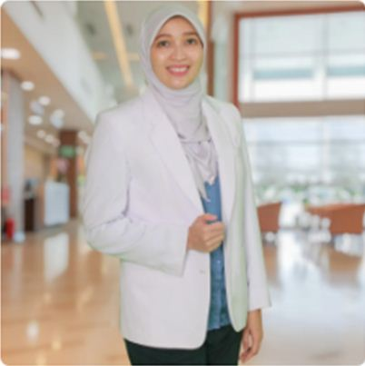

Profile Dokter Alini Hafiz
----------------------

Dr. Alini Hafiz, SpOG(K)-KFM
Menyelesaikan pendidikan dokter umum dan spesialis Obstetri dan Ginekologi Fakultas Kedokteran Universitas Diponegoro.
Dokter Alini melanjutkan subspesialis Fetomaternal di universitas yang sama.
Dokter Alini saat ini bertugas sebagai staff pengajar di Fakultas Kedokteran UNDIP dan staff fungsional divisi fetomaternal SMF Obstetri dan Ginekologi Rumah Sakit Kariadi, Semarang.
Untuk meningkatkan skill dan keilmuan, saat ini dokter Alini masih aktif mengikuti pelatihan dan simposium baik secara offline maupun online.
Gallery
--------------------
Dokumentasi dari kegiatan rumah sakit maupun yang lainnya